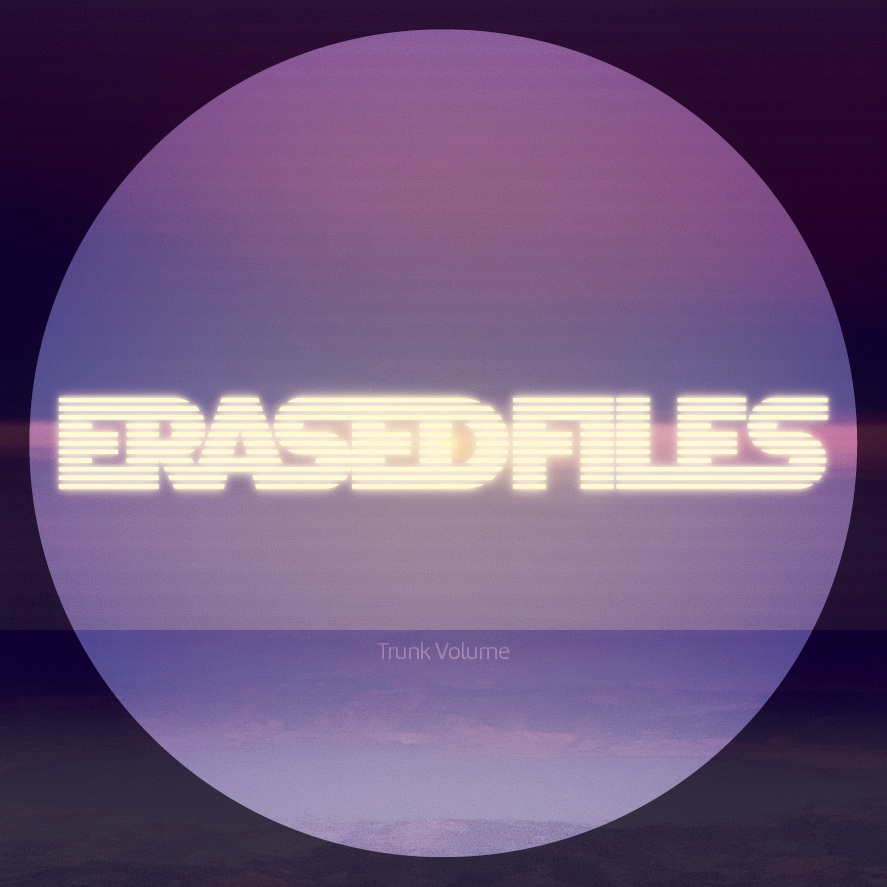

Trunk Volume

- Details
- 3 songs, 22 minutes
- January 03, 2020
- ℗ THICC RIFFS
- Credits
- Bass Guitar and Cello played by Alec Kretchun on “Mock All and Sundry Things”
- Mastered by Timothy Stollenwerk at Stereophonic Mastering
- Made in Portland, OR
